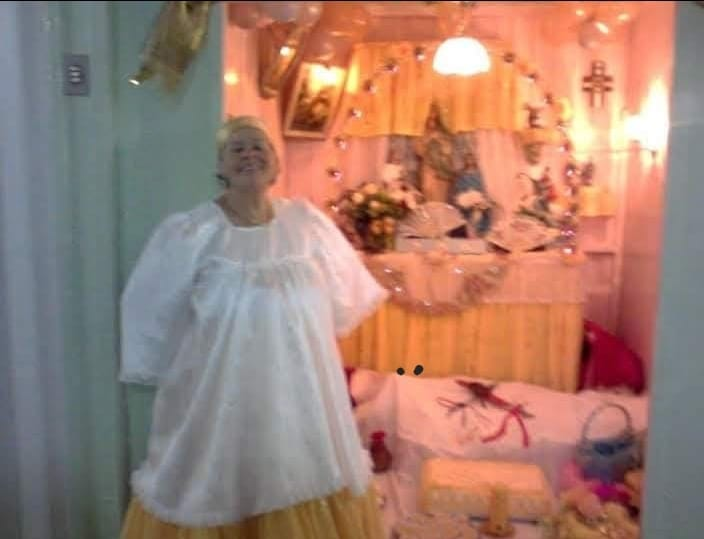
Yálorixá Irene de Oxum Docô
Minha primeira Mãe de Santo. Foi através do seu axé que meu caminho religioso começou.
Nação: Oyó
Uma homenagem aos mentores, familiares, irmãos de fé e a todos que fortalecem essa caminhada espiritual em Nação, Umbanda e Quimbanda.

Aos meus guias e mentores espirituais, que me conduzem com sabedoria e proteção em minha jornada. Aos meus irmãos de fé, que compartilham desse caminho com amor e respeito. Aos meus familiares, pelo apoio incondicional.
Que Oxalá continue abençoando a todos nós, iluminando nossos caminhos e fortalecendo nossos laços. Axé!
- Pai Cristian D'Oxalá
Aos meus mentores espirituais, minha eterna gratidão.

Minha primeira Mãe de Santo. Foi através do seu axé que meu caminho religioso começou.
Nação: Oyó
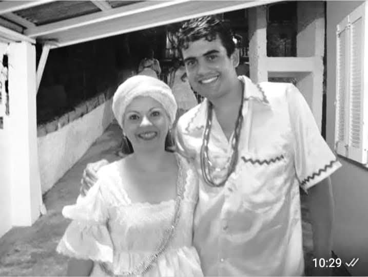
Minha eterna gratidão pelo apoio incondicional em todos os momentos da minha jornada espiritual.
Nação: Jeje
Reconheço sua sabedoria e axé que iluminam meu caminho. Seu legado é honra e inspiração.
Nação: Cabinda
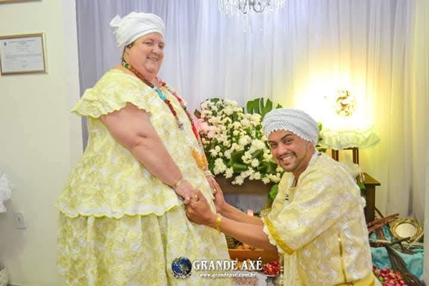
Com profunda gratidão, celebro sua luz e seu axé, que fortalecem e guiam meu caminho.
Nação: Jejê Ijexá
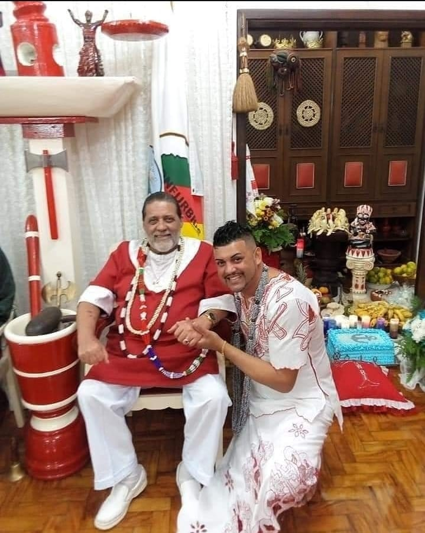
Com eterna gratidão e respeito, honro sua memória e o axé que me guiou. Seu legado vive em meu coração.
Nação: Jejê
Aos meus amigos e irmãos de fé, minha eterna gratidão.
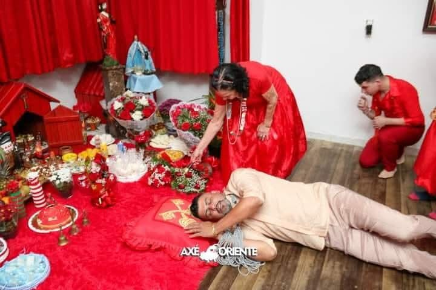
Sou muito grato pelos seus conselhos e parceria nos momentos mais importantes da minha caminhada espiritual.
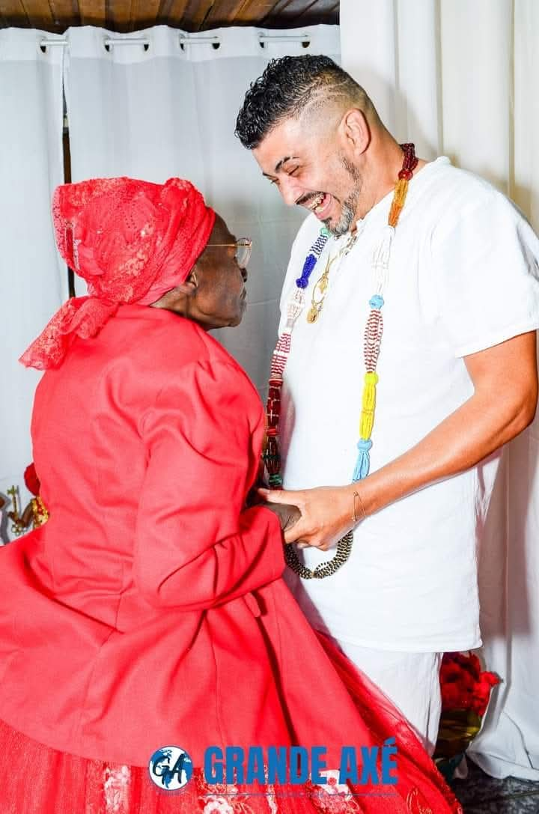
Muitos anos de amizade, respeito e sabedoria. Minha gratidão eterna pelo axé compartilhado.
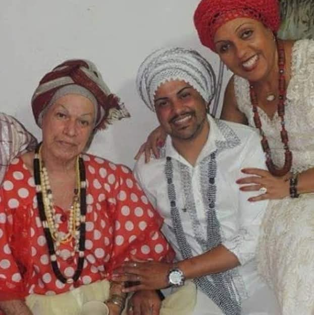
Por sua força e determinação, que sempre inspiraram minha própria caminhada.
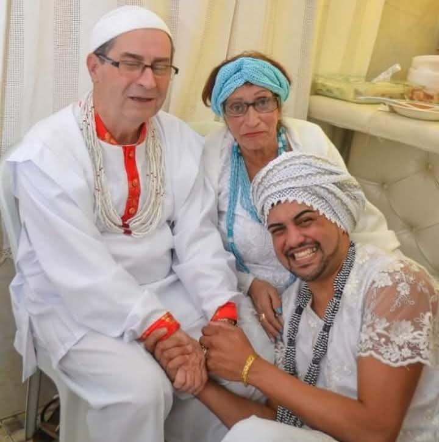
Com profunda gratidão, celebro sua luz e seu axé, que fortalecem e guiam nossos caminhos.
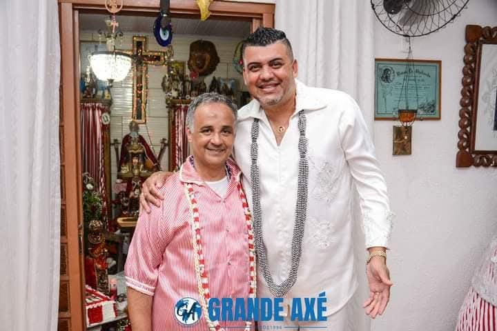
Com eterna gratidão e respeito, honro sua amizade e presença na minha história.
Nação: Oyó
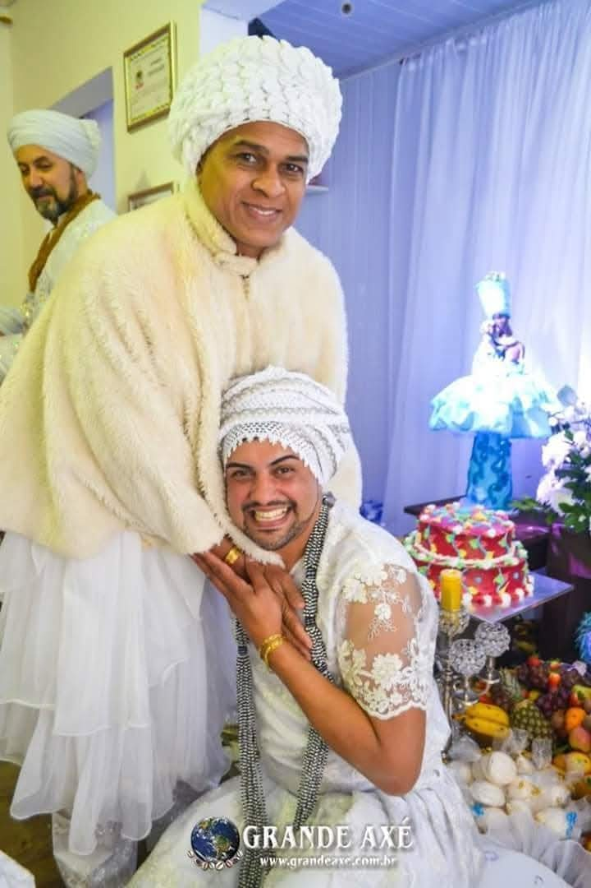
Por compartilhar seus conhecimentos e me acolher como irmão em momentos decisivos.
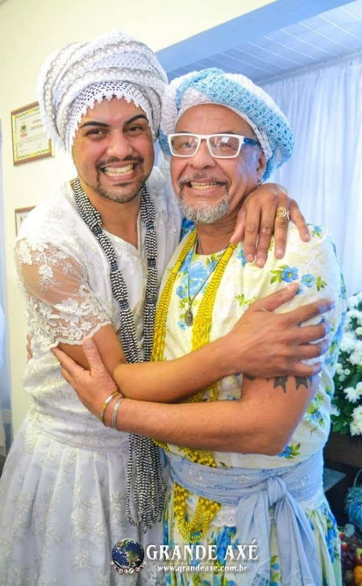
Por sua paciência ao me ensinar os fundamentos mais profundos da nossa fé.
Por sua energia transformadora, que sempre renovou minhas forças espirituais. Ícone do nosso Batuque.
Nação: Oyó
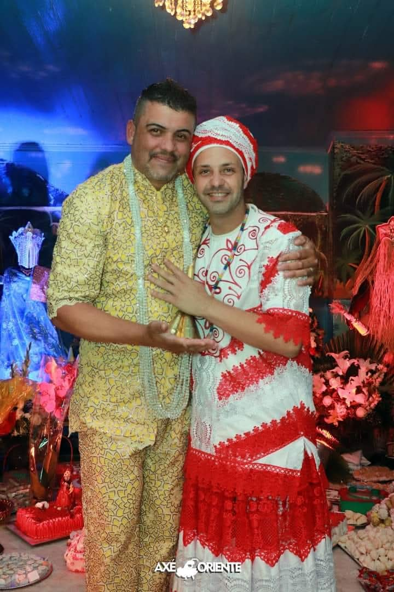
Por compartilhar sua grande fé e fortalecer essa caminhada com respeito e axé.
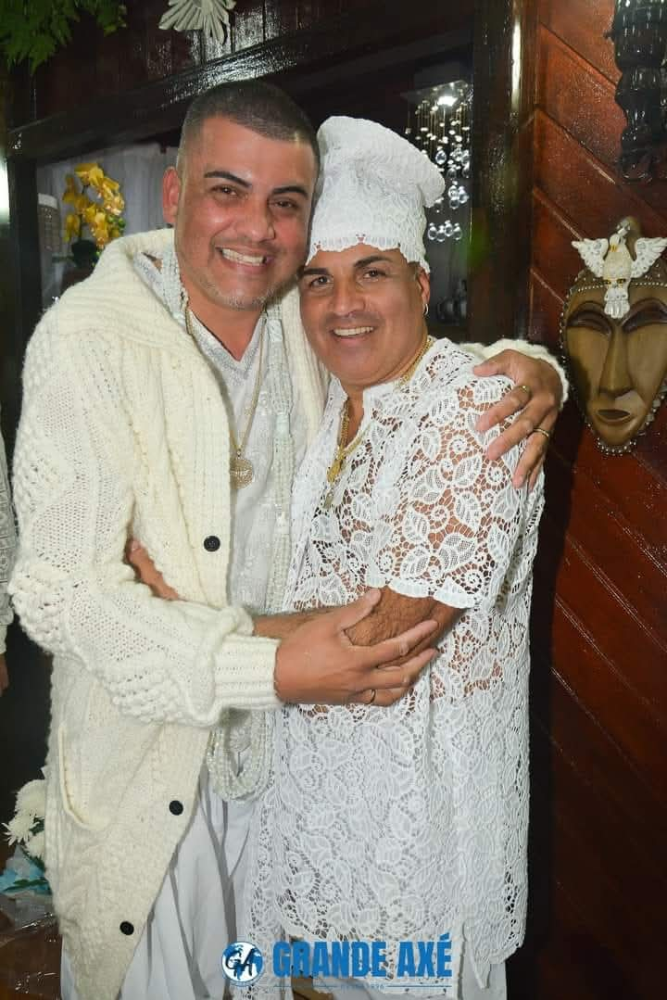
Querido amigo, gratidão por sua sabedoria ancestral e por me ensinar o valor da amizade.
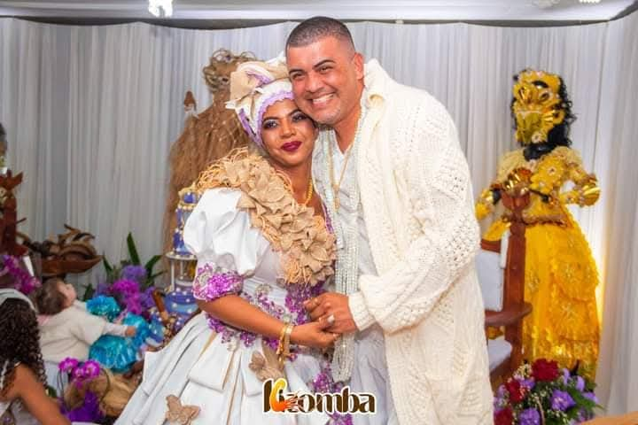
Por sua coragem e determinação, que sempre me inspiraram a seguir em frente.
Nação: Oyó
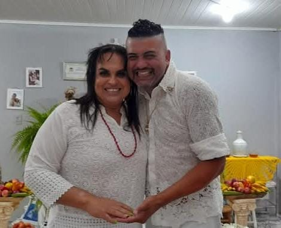
Minha irmã de santo, gratidão pelo amor e acolhimento que sempre renovaram minhas energias espirituais.